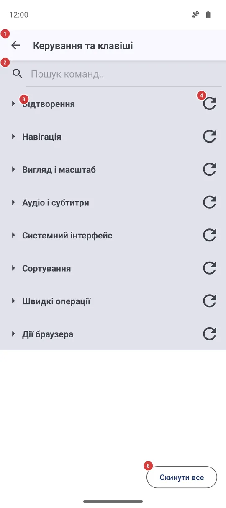
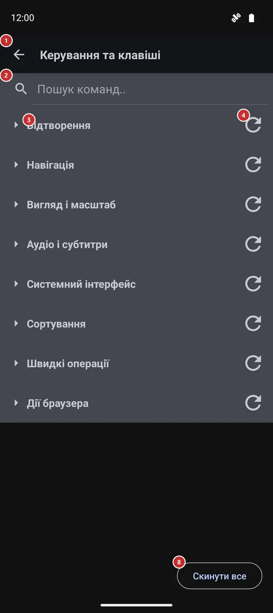

Керування та клавіші
Для чого цей екран
Виберіть, яка клавіша, кнопка геймпада чи кнопка миші запускає кожну команду - відтворення, навігацію, сортування й перегляд. У кожної команди є стандартна клавіша, тож ви змінюєте лише те, що хочете, і будь-коли можете повернути все як було.


Порядок дій
- Відкрийте «Керування та клавіші» в налаштуваннях, на вкладці «Управління». Команди згруповано за призначенням, і групи спочатку згорнуті.
- Знайдіть команду: введіть частину її назви в полі пошуку 2 або натисніть заголовок групи 3, щоб розгорнути її.
- Натисніть «Редагувати призначення» 6 у рядку команди 5 і виберіть пристрій, для якого хочете змінити клавішу, - клавіатуру, геймпад тощо.
- Відкриється вікно 9 і чекатиме. Натисніть нову клавішу чи кнопку, поки йде відлік 10, і перевірте, що захоплено 11.
- Якщо червоне повідомлення каже, що клавішу зайнято 12, натисніть іншу або «Скасувати» 13. Інакше натисніть «Призначити» 14, щоб зберегти.
- Щоб повернути стандартну клавішу, скористайтеся скиданням у рядку 7 для однієї команди, скиданням групи 4 для цілої групи або «Скинути все» 8 для всіх одразу. Два останні спершу запитують.
- Зміни зберігаються одразу. Кнопка «Назад» 1 закриває екран.
Елементи
Верхня панель і пошук
1НазадЗакриває екран і повертає до налаштувань.
Підтверджувати нічого: кожна зміна зберігається одразу, щойно ви її робите.
2Пошук команд..Залишає в списку лише відповідні команди.
Введіть частину назви команди, наприклад «Наступний файл», або частину назви клавіші, і список звужується просто під час введення. Група без збігів зникає. Згорнута група зі збігом показує лише заголовок, тому натисніть на неї, щоб побачити відповідні рядки. Очистьте поле, щоб повернути все.
Групи й команди
3Групи командЗгортає й розгортає команди однієї групи.
Команди згруповано за призначенням: «Відтворення», «Навігація», «Вигляд і масштаб», «Аудіо і субтитри», «Системний інтерфейс», «Сортування», «Швидкі операції», «Дії браузера» і - лише у збірках з підтримкою VR - «Лише VR». Групи спочатку згорнуті; натисніть заголовок, щоб відкрити групу. Застосунок пам’ятає, які групи ви залишили відкритими. У широкому вікні рядки йдуть у два стовпці.
4Скидання групиПовертає одній групі стандартні клавіші.
Це маленька піктограма з круглою стрілкою в кінці заголовка групи. Застосунок питає, чи скинути всі призначення в цій групі до заводських, і нічого не змінює, доки ви не натиснете «Скинути». Зачіпаються лише клавіші, які ви змінили в цій групі.
- Скасування
- Ваші клавіші в цій групі зникають, а стандартні повертаються. Щоб повернути свою клавішу, призначте її знову через «Редагувати призначення».
5Рядок командиКоманда й клавіші, які її запускають.
Згори - назва команди. Під нею - її поточні клавіші, кожна з позначкою пристрою: клавіатура, геймпад, миша чи VR; прочерк означає, що клавішу не задано. В однієї команди можуть бути клавіші одразу на кількох пристроях, тож кнопка геймпада й клавіша клавіатури можуть робити те саме.
6Редагувати призначенняПризначає команді нову клавішу чи кнопку.
Невелике меню питає, для якого пристрою змінювати. «Клавіатура» та «Геймпад» є завжди, кожен із поточною клавішею або «(не задано)»; «Миша» й VR з’являються, лише коли в команди вже є для них клавіша. Після вибору відкривається вікно захоплення клавіші. Нова клавіша замінює попередню для цього пристрою.
7Скинути до стандартнихПовертає одній команді стандартну клавішу.
Працює лише для команди, яку ви змінювали; у недоторканої команди кнопка приглушена. Скидання виконується одразу, без запитання.
- Скасування
- Ваша клавіша для цієї команди зникає, повертається стандартна. Якщо хочете повернути свою, призначте її знову через «Редагувати призначення».
Скинути все
8Скинути всеПовертає всім командам стандартні клавіші.
Застосунок питає «Скинути всі призначення до заводських? Це не можна скасувати.» і нічого не змінює, доки ви не натиснете «Скинути». Після цього кожна команда використовує свої початкові кнопки клавіатури, геймпада й миші.
- Скасування
- Усі ваші клавіші зникають разом, і повернути їх не можна. Призначайте їх знову по одній.
Вікно захоплення клавіші
9Натисніть клавішу або кнопку..Повідомляє, що застосунок чекає на вашу клавішу.
Вікно закриває екран і чекає на клавішу клавіатури (разом із Ctrl, Shift чи Alt, якщо ви їх тримаєте), кнопку геймпада, відхилення стика, тригера чи хрестовини або кнопку миші. Системна клавіша «Назад» новою клавішею не вважається.
10Відлік часуПоказує, скільки секунд залишилося на натискання.
У вас є 30 секунд. Коли час мине, вікно закриється саме, і нічого не зміниться.
11Захоплена клавішаПоказує клавішу чи кнопку, яку впіймав застосунок.
Тут написано «Захоплено:» і назву того, що ви натиснули, наприклад Ctrl+Shift+K для клавіші клавіатури з модифікаторами. Поки ви нічого не натиснули, видно прочерк. Якщо перше натискання було не те, натисніть іншу клавішу - враховується остання.
12Повідомлення про конфліктПопереджає, що цю клавішу вже використовує інша команда.
Червоний рядок «Вже призначено:» і назви цих команд. Поки він видимий, кнопка «Призначити» не працює, тому дві команди не можуть ділити одну клавішу. Натисніть іншу клавішу або скасуйте й спершу звільніть іншу команду.
13СкасуватиЗакриває вікно, нічого не змінюючи.
Команда зберігає попередню клавішу. Підходить, якщо ви відкрили вікно помилково або потрібну клавішу вже зайнято.
14ПризначитиЗберігає впійману клавішу для цієї команди.
Кнопка працює лише після того, як клавішу впіймано і нею не користується інша команда. Вона одразу зберігає клавішу, закриває вікно й оновлює рядок.